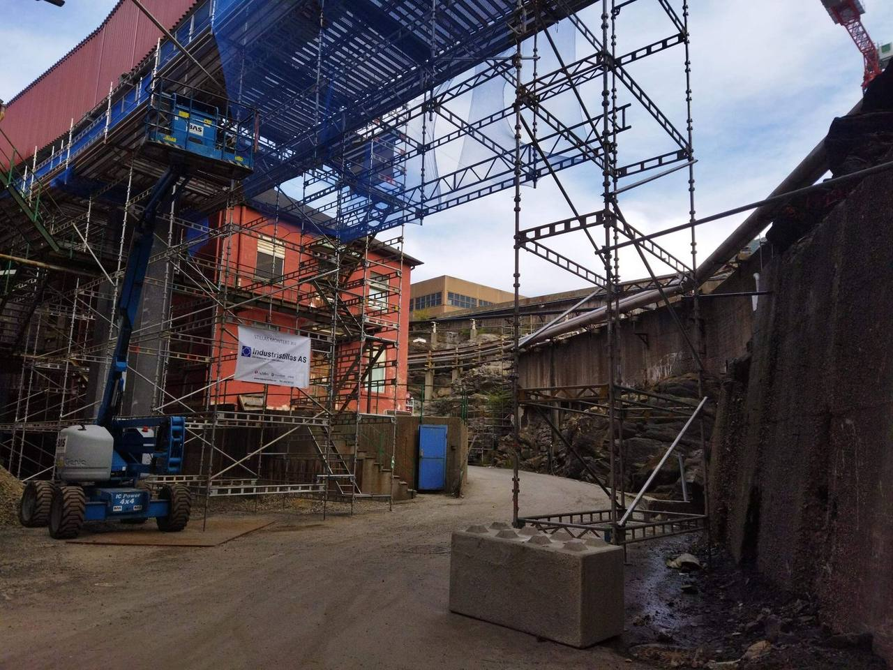
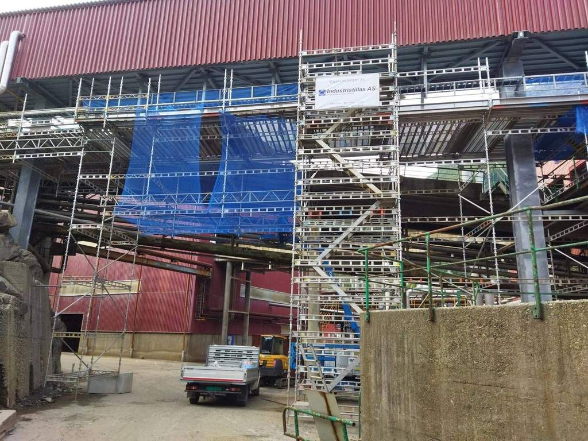
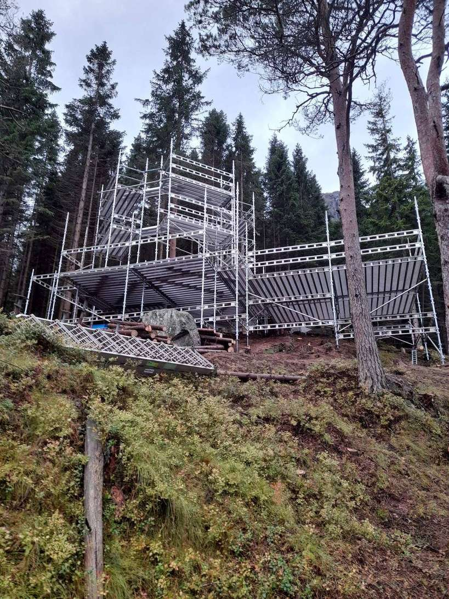
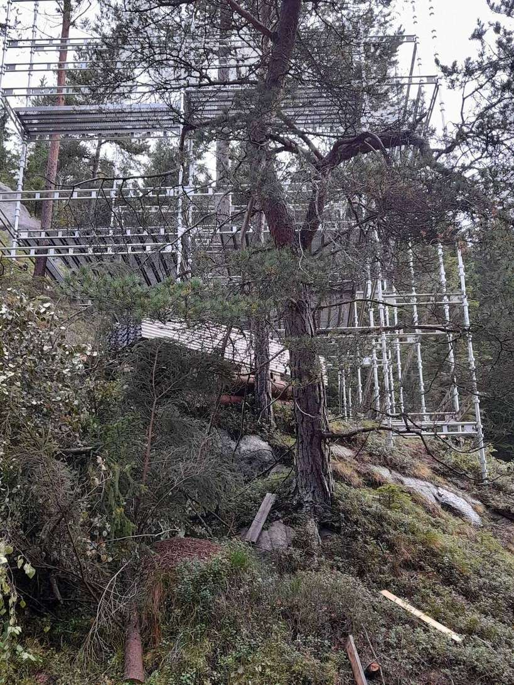

Prosjekter
Stillas der det er brattest, våtest og trangest.
Vi jobber med bygg, anlegg og industri. Her er et utvalg oppdrag — noen små, noen svært høye.

Stillas rundt boligblokk i Odda, montert for Kruse Smith. Tett stillas med gangbane rundt hele bygget.

Stillas og trappetårn på industrianlegg i Karmøy. Tilkomst til høye nivåer uten klatring.

Bygging av stillas for trehytter i Odda — terreng der standardløsninger ikke fungerer.

Rigg og stillas rundt arbeidsområdet, med tett konstruksjon over.

Haki stillassystem med nett og gangbaner. Eget utstyr, kontrollert før hvert oppdrag.

Stillas der underlaget ikke er flatt. Fundamentering og forankring gjøres etter befaring.
Vi har tatt stillas med i beregningen før.
Stillas rundt et bygg i drift, telt over et synkehull, adkomst til en tank på taket — utfordringen er nesten alltid den samme: Hvordan kommer folk trygt til og fra arbeidsstedet uten å stoppe resten av anlegget?
Vi svarer på det før vi gir pris. Da blir prosjektet forutsigbart for begge parter.
